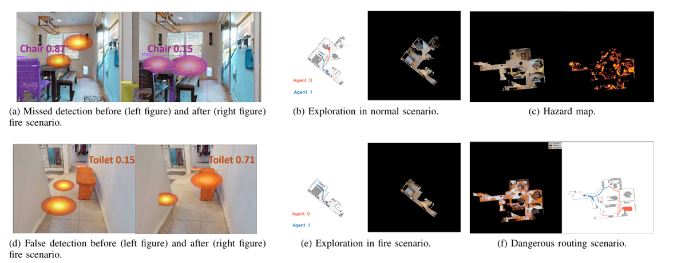

System Design Overview
VULCAN is a hazard-aware multi-agent navigation framework that integrates multi-modal perception, vision–language reasoning, and cooperative planning to enable robust operation in indoor fire-disaster environments.

Indoor fire disasters pose severe challenges to autonomous search and rescue due to dense smoke, high temperatures, and dynamically evolving indoor environments. In such time-critical scenarios, multi-agent cooperative navigation is particularly useful, as it enables faster and broader exploration than single-agent approaches. However, existing multi-agent navigation systems are primarily vision-based and designed for benign indoor settings, leading to significant performance degradation under fire-driven dynamic conditions. In this paper, we present VULCAN, a multi-agent cooperative navigation framework based on multi-modal perception and vision–language models (VLMs), tailored for indoor fire disaster response. We extend the Habitat-Matterport3D benchmark by simulating physically realistic fire scenarios, including smoke diffusion, thermal hazards, and sensor degradation. We evaluate representative multi-agent cooperative navigation baselines under both normal and fire-driven environments. Our results reveal critical failure modes of existing methods in fire scenarios and underscore the necessity of robust perception and hazard-aware planning for reliable multi-agent search and rescue.
VULCAN is a hazard-aware multi-agent navigation framework that integrates multi-modal perception, vision–language reasoning, and cooperative planning to enable robust operation in indoor fire-disaster environments.
Fire-induced smoke severely degrades multi-modal perception in indoor environments. Using Gazebo-based fire simulations with a high-fidelity physics engine and particle-emitter support, we qualitatively demonstrate modality-dependent perception degradation under increasing smoke density.
RGB Camera
Depth Camera
Thermal Camera
Lidar Sensor
Modality-dependent perception degradation under increasing smoke density in simulated indoor fire environments.
We qualitatively compare multi-agent navigation behaviors under normal and fire-induced environments. Different semantic targets are used as proxies for human presence, highlighting how fire hazards affect individual perception and cooperative route planning.
Beds are used as proxies for human locations in indoor rescue scenarios.
Agent 0 View (Normal Environment)
Agent 0 View (Fire Environment)
Agent 1 View (Normal Environment)
Agent 1 View (Fire Environment)
Cooperative Route Planning (Normal Environment)
Cooperative Route Planning (Fire Environment)
Toilets serve as alternative proxies for human presence.
Agent 0 View (Normal Environment)
Agent 0 View (Fire Environment)
Agent 1 View (Normal Environment)
Agent 1 View (Fire Environment)
Cooperative Route Planning (Normal Environment)
Cooperative Route Planning (Fire Environment)
All experiments are conducted in the Habitat simulator. Open-vocabulary object detection and class-agnostic segmentation are implemented using YOLOv8 and Mobile-SAM. A vision–language model (GPT-4o) assigns frontier goals based on the global multi-agent state. Each episode involves two robots with shared start positions and different initial orientations.
We evaluate representative multi-agent, map-based navigation baselines, including both VLM-based planners and conventional map-based methods, under normal conditions and simulated indoor fire conditions to assess their navigation success rate, exploration efficiency, and safety awareness. The quantitative results are summarized in Table I and Table II.
| Method | NS | SR | SPL | CHE |
|---|---|---|---|---|
| Greedy | 219.03 | 0.686 | 0.322 | 0 |
| Cost-Utility | 199.60 | 0.628 | 0.315 | 0 |
| Random Sample | 206.62 | 0.631 | 0.258 | 0 |
| Co-NavGPT | 185.43 | 0.666 | 0.388 | 0 |
| Method | NS ↑ | SR ↓ | SPL ↓ | CHE ↑ |
|---|---|---|---|---|
| Greedy | 267.40 | 0.651 | 0.319 | 11.233 |
| Cost-Utility | 207.49 | 0.608 | 0.306 | 8.517 |
| Random Sample | 214.96 | 0.625 | 0.251 | 7.174 |
| Co-NavGPT | 187.89 | 0.660 | 0.381 | 4.873 |
We further analyze the underlying causes of the observed performance degradation under fire-driven scenarios. Our analysis reveals that perception uncertainty, incomplete map construction, and hazard-unaware decision making jointly contribute to navigation failures in smoke-filled and thermally hazardous environments.
